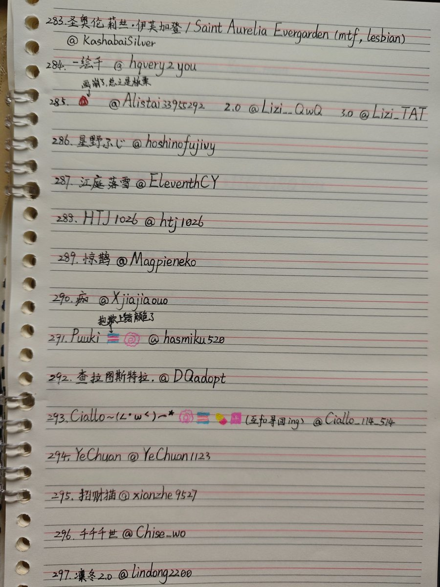
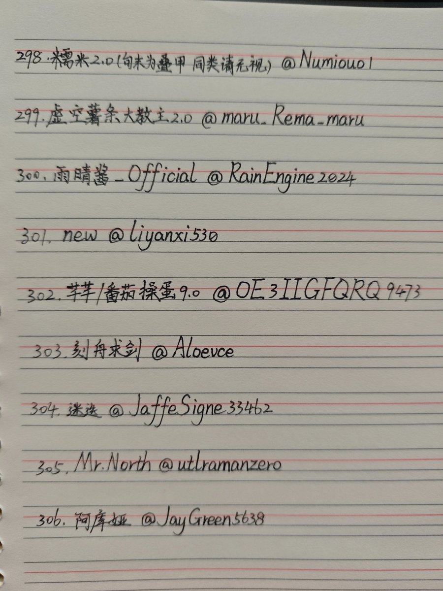
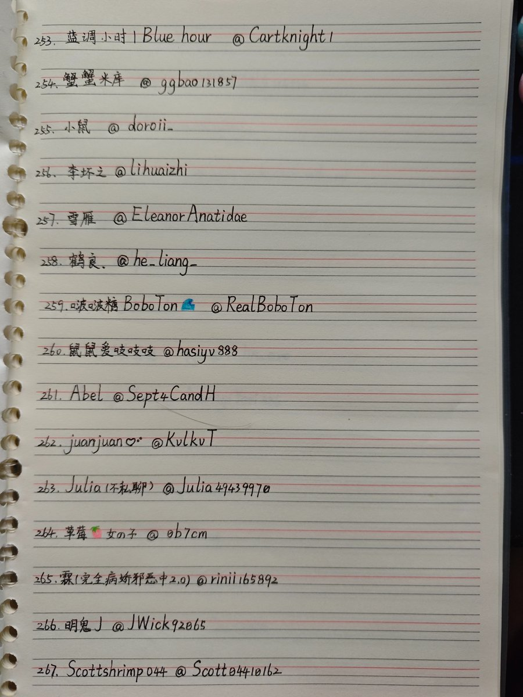
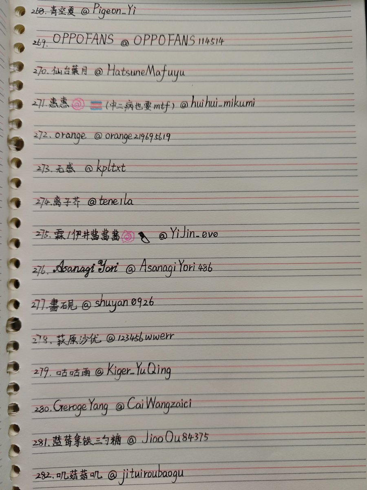

第八期，到目前为止已经写完所有互关了，暂时。
有时会看到有互关发帖说会不会有人记得自己，现在我可以说，我会一直记得你哦。不管你有没有刷到过我，有没有和我互动过，现在我抄写过了你的ID，在我的手心里，在我的脑海里过了一遍，记录在本子里，记录在相册里，记录在互联网里，对我来说要忘记更难。
我的记忆里永远留有你的位置，这是我送给所有人的礼物。

有时会看到有互关发帖说会不会有人记得自己，现在我可以说，我会一直记得你哦。不管你有没有刷到过我，有没有和我互动过，现在我抄写过了你的ID，在我的手心里，在我的脑海里过了一遍，记录在本子里，记录在相册里，记录在互联网里，对我来说要忘记更难。
我的记忆里永远留有你的位置，这是我送给所有人的礼物。




第七期，还差22个互关。
话说大家是怎么发现我的呢？两个月之前刚来的时候我觉得自己在这里随便发点什么，一年能有100个关注就已经很不错了，没想到一转眼已经快一千了。因为我真的只是一个很普通的人，从来都没有想过能有这么多人看到我。谢谢你们。 https://t.co/qWO1mwZ856 https://t.co/YWPWB617zv
话说大家是怎么发现我的呢？两个月之前刚来的时候我觉得自己在这里随便发点什么，一年能有100个关注就已经很不错了，没想到一转眼已经快一千了。因为我真的只是一个很普通的人，从来都没有想过能有这么多人看到我。谢谢你们。 https://t.co/qWO1mwZ856 https://t.co/YWPWB617zv